── Attaching core tidyverse packages ──────────────────────── tidyverse 2.0.0 ──
✔ dplyr 1.2.1 ✔ readr 2.2.0
✔ forcats 1.0.1 ✔ stringr 1.6.0
✔ ggplot2 4.0.3 ✔ tibble 3.3.1
✔ lubridate 1.9.5 ✔ tidyr 1.3.2
✔ purrr 1.2.2
── Conflicts ────────────────────────────────────────── tidyverse_conflicts() ──
✖ dplyr::filter() masks stats::filter()
✖ dplyr::lag() masks stats::lag()
ℹ Use the conflicted package (<http://conflicted.r-lib.org/>) to force all conflicts to become errors
Attaching package: 'gridExtra'
The following object is masked from 'package:dplyr':
combineKey concepts for STAT 154 / 254
Key concepts
This class will focus almost entirely on supervised learning.
Here are the key concepts:
- What does it mean to do well on a supervised learning problem?
- Random data, loss, and risk
- Empirical risk minimization, generalization
- What would we do if we had an infinite amount of data?
- Generating computational tools to fit arbitrary functions
- Expressive function classes
- What goes wrong when we have only a limited amount of data?
- Avoid overfitting by limiting the expressivity of function classes
- Regularization
- How do we find a sweet spot between expressiveness and overfitting?
- Theory: generalization bounds
- Practice: out-of-sample error
QSAR Fish Toxicity Dataset
These examples will be based on the UCI QSAR Fish Toxicity Dataset.
The dataset consists of a set of 908 chemicals (one row each), with data for:
LC50: the concentration that causes death in 50% of test fish over a test duration of 96 hours.MLOGP: (molecular properties)CIC0: (information indices)GATS1i: (2D autocorrelations)NdssC: (atom-type counts)NdsCH: (atom-type counts)SM1_Dz: (2D matrix-based descriptors)
“Quantitative structure–activity relationship” (QSAR) models predict some chemical property (toxicity to the fathead minnow) from structural features of the molecules.
Task: Set \(x=\)GATS1i, \(y=\)LC50, and use ML to predict fish mortality from 2D autocorrelations.
NoteQuestion
Describe some concrete settings when you would want to use an ML model that could perform this task.
Note: I will be simulating data using a “ground truth” that is loosely based on patterns from the actual data.
Fitting a function
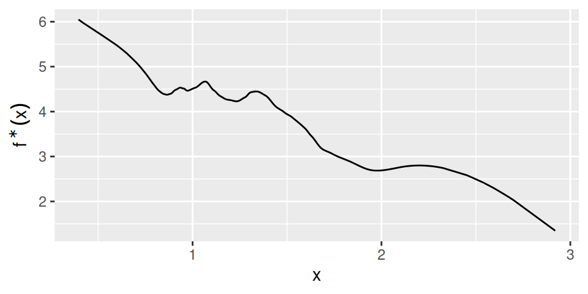
Let’s imagine that \(y\) (fish toxicity) is determined exactly by \(x\) (2D autocorrelations).
That means \(y = f^{\star}(x)\) for some \(f^{\star}\). (I will drop this assumption later in the lecture.)
We don’t know \(f^{\star}\), but we can query it by selecting \(x\) (a molecule) and measuring \(y\) (seeing what concentration kills minnows)
Fitting a function

Task: Query \((x_n, y_n)\) pairs and make a program that returns \(\hat{f}(x) \approx f^{\star}(x)\).
NoteQuestion
Suppose you can query a very large number of datapoints.
- Can you ever perfectly approximate \(f^{\star}(x_\mathrm{new})\) at an unseen \(x_\mathrm{new}\)?
- Propose the simplest procedure you can think of (even if not very good).
- Propose a more complex procedure that will do a better job.
Constant functions
The simplest approximation is arguably the constant \(\hat{f}(x) = \frac{1}{N} \sum_{n=1}^Nf^{\star}(x_n)\).
NoteQuestion
- Think of an application for which a good constant is enough.
- Think of an application for which a good constant is not enough.
- Will the constant you estimate depend on which \(x_n\) you select? How?
- Can you think of other ways to take the data and choose the constant?
Constant functions
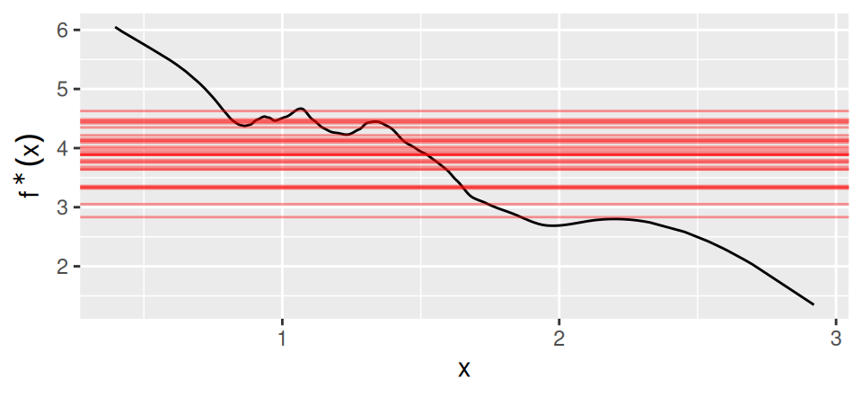
Using a constant function selects \(\hat{f}\) from the function class: \[ \mathcal{F}_{constant} := \{ f: f(x) = c \textrm{ for some real-valued }c\} \]
Our “estimation procedure” takes in data \(\mathcal{D}= \{ (x_1, y_1), \dots, (x_N, y_N)\}\) and returns a function \(\hat{f}\in \mathcal{F}_{constant}\). This is equivalent to choosing a \(\hat{c}\) and taking \(\hat{f}(x) = \hat{c}\).
For a procedure in general, \(\mathcal{F}\) is the set of all functions that it could represent.
Linear functions
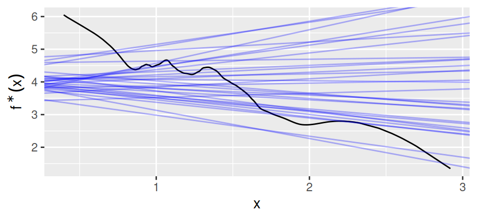
We can also define the class of linear functions: \[ \begin{aligned} \mathcal{F}_{constant} :={}& \{ f: f(x) = c \textrm{ for some real-valued }c\}\\ \mathcal{F}_{linear} :={}& \{ f: f(x) = c + b x \textrm{ for some real-valued }c, b\}\\ \end{aligned} \]
Every constant function is also a linear function, but some linear functions are not constant functions.
We say that \(\mathcal{F}_{linear}\) is a more expressive function class than \(\mathcal{F}_{constant}\).
Function classes
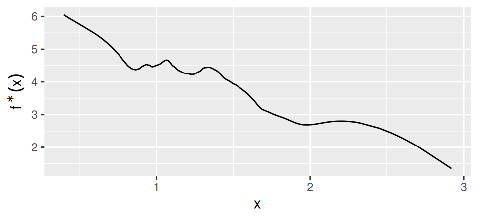
A key theme of this class is developing expressive function classes!
NoteQuestion
Identify the function classes for some of the examples given earlier. Which are more expressive? Which are the least expressive?
Loss
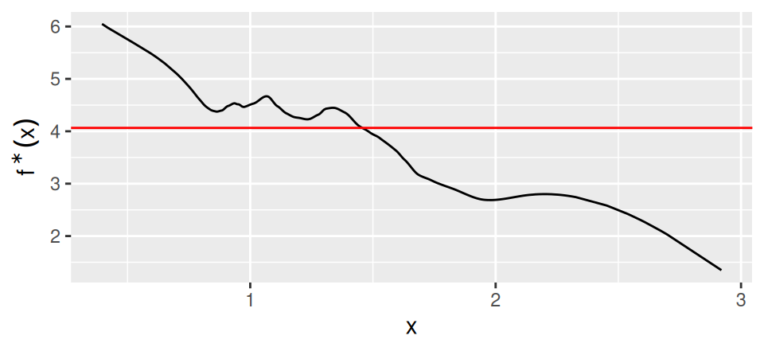
We want to choose \(\hat{f}\in \mathcal{F}\) that is a “good approximation.”
Suppose we have some \(x\) with associated \(y\). Let the “loss function” \(\mathscr{L}(f(x), y)\) measure how “bad it is” to predict \(f(x)\) when the truth was \(y\).
Loss

Common examples:
- \(\mathscr{L}(f(x), y) = (f(x) - y)^2\)
- \(\mathscr{L}(f(x), y) = \left|f(x) - y\right|\)
- \(\mathscr{L}(f(x), y) = \mathrm{I}\left(f(x) \ne y\right)\) (Here, \(\mathrm{I}\left(\cdot\right)\) is the “indicator function.” It evaluates to \(1\) if its argument is true, and \(0\) otherwise.)
NoteQuestion
What are some properties any loss function should satisfy?
Risk
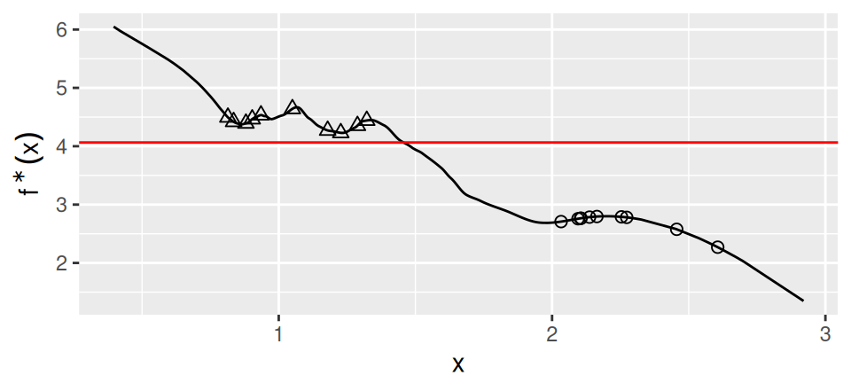
The loss is defined at a single datapoint. Unless we really care about only one prediction, it makes sense to average the loss over multiple datapoints:
\[ \frac{1}{N} \sum_{n=1}^N\mathscr{L}(f(x_n), y_n) \]
Note that, for a given \(f\), the average loss will be different depending where the points are!
Risk

If we believe that future \(x\) will be drawn randomly, independently, and identically distributed (IID) from a future distribution \(p(x)\), then it makes sense to measure the average loss.
This average loss is called “risk”. \[ \begin{aligned} \mathscr{R}(f) :={}& \mathbb{E}_{p(x, y)}\left[\mathscr{L}(f(x), y)\right] & \textrm{"Risk"}\\ \end{aligned} \] Note that risk depends only on the function \(f\) — the distribution or data is considered fixed. Different distributions give different risks.
Risk

NoteQuestion
Recall our QSAR application.
- Describe a use case where the IID assumption might be reasonable
- Describe a use case where the IID assumption might not be reasonable
- What does the IID assumption imply about the relationship between the other chemical variables?
- Does minimizing \(\mathscr{R}(f)\) guarantee an accurate prediction on any particular \(x\)?
Risk
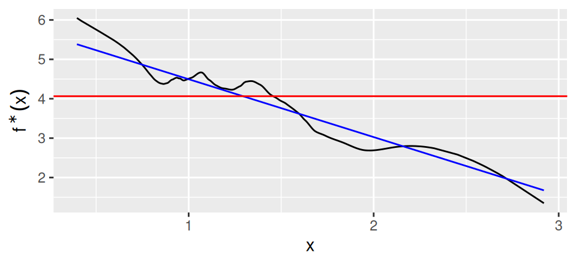
There’s usually a gap between the best function \(f^{\star}\) and the best function in our class: \[ \begin{aligned} \overline{f}:= \underset{f\in \mathcal{F}}{\mathrm{argmin}}\, \mathscr{R}(f) && f^{\star}:= \underset{f}{\mathrm{argmin}}\, \mathscr{R}(f) && \mathscr{R}(\overline{f}) - \mathscr{R}(f^{\star}) \ge 0 \end{aligned} \] This gap is typically lower for more expressive function classes.
Why not just make our function classes as expressive as possible?
Risk
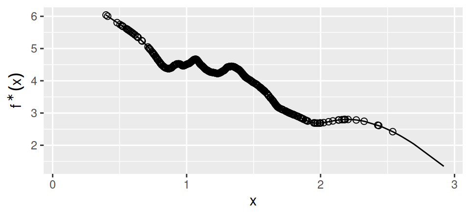
If we want to learn a function that makes \(\mathscr{R}(f)\) small, we should draw training data \(x_n \overset{\mathrm{IID}}{\sim}p(x)\) and form the “empirical risk:” \[ \begin{aligned} \mathscr{R}(f) :={}& \mathbb{E}_{p(x, y)}\left[\mathscr{L}(f(x), y)\right] & \textrm{"Risk"}\\ \hat{\mathscr{R}}(f) :={}& \frac{1}{N} \sum_{n=1}^N\mathscr{L}(f(x_n), y_n) & \textrm{"Empirical risk"}. \end{aligned} \]
Trying to make \(\mathscr{R}(f)\) small by minimizing \(\hat{\mathscr{R}}(f)\) is called empirical risk minimization (ERM). ERM is the main idea in this course.
Response noise
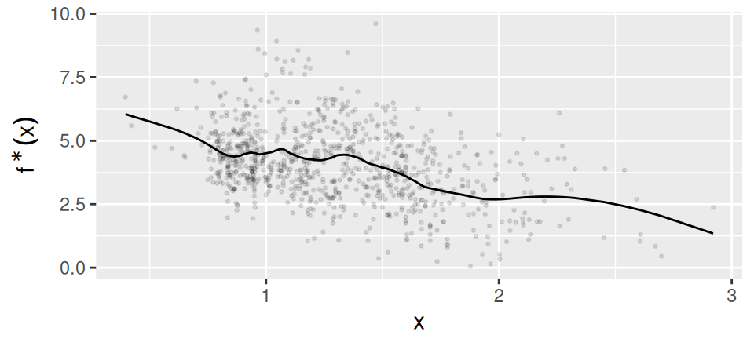
Up to now, we’ve been imagining that \(y= f^{\star}(x)\). But usually our data looks like this.
Response noise
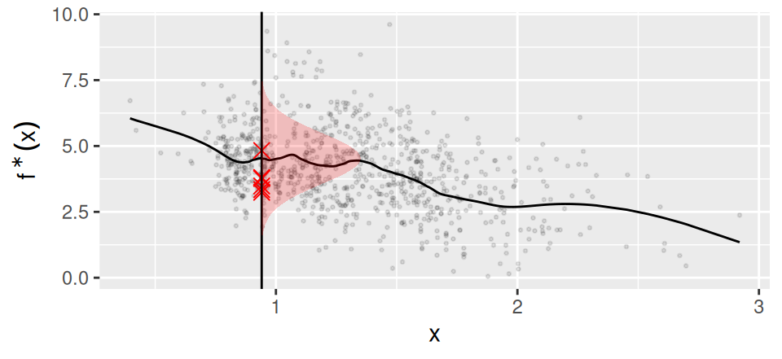
If you query the same \(x\) and get different values, you know that there is randomness in \(y\). Even if you don’t observe repeats, if “nearby” \(x\) give very different \(y\), you might think of \(y\) as random.
If \(y\) is random, then at each \(x\) there is a conditional distribution, \(p(y\vert x)\), which is different for each \(x\).
Note that risk is the expectation over both \(x\) and \(y\): \(\mathscr{R}(f) :={} \mathbb{E}_{p(x, y)}\left[\mathscr{L}(f(x), y)\right]\).
Response noise
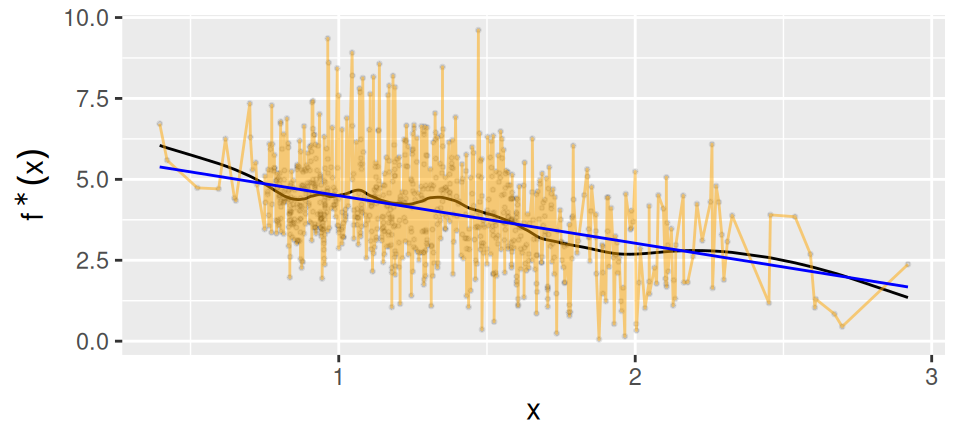
ERM finds the best function in our function class to the actual data: \[ \hat{f}:= \underset{f\in \mathcal{F}}{\mathrm{argmin}}\, \hat{\mathscr{R}}(f) \] The orange line is your \(\hat{f}\) if \(\mathcal{F}\) is very expressive!
If all you see is the data points, how can you tell which is the better prediction function?
Response noise

If the function class \(\mathcal{F}\) is too expressive, we may fit the noise, not the risk. \[ \begin{aligned} \hat{f}:= \underset{f\in \mathcal{F}}{\mathrm{argmin}}\, \hat{\mathscr{R}}(f) && \overline{f}:= \underset{f\in \mathcal{F}}{\mathrm{argmin}}\, \mathscr{R}(f) && \Rightarrow\quad \mathscr{R}(\hat{f}) - \mathscr{R}(\overline{f}) \ge 0 \end{aligned} \] This gap tends to be higher for more expressive function classes.
A fundamental tradeoff

\[ \begin{aligned} \hat{f}:= \underset{f\in \mathcal{F}}{\mathrm{argmin}}\, \hat{\mathscr{R}}(f) && \overline{f}:= \underset{f\in \mathcal{F}}{\mathrm{argmin}}\, \mathscr{R}(f) && f^{\star}:= \underset{f}{\mathrm{argmin}}\, \mathscr{R}(f) \end{aligned} \]
“Regret” is the gap between what we learn and what we might have learned. Its two constituent terms go in opposite directions with the expressivity of the function class:
\[ \begin{aligned} \textrm{Regret} := \mathscr{R}(\hat{f}) - \mathscr{R}(f^{\star}) ={}& \underbrace{ \mathscr{R}(\hat{f}) - \mathscr{R}(\overline{f}) }_{\textrm{Expressivity }\uparrow} + \underbrace{ \mathscr{R}(\overline{f}) - \mathscr{R}(f^{\star}) }_{\textrm{Expressivity }\downarrow} \end{aligned} \]
STAT 154 / 254 in a nutshell
\[ \begin{aligned} \hat{f}:= \underset{f\in \mathcal{F}}{\mathrm{argmin}}\, \hat{\mathscr{R}}(f) && \overline{f}:= \underset{f\in \mathcal{F}}{\mathrm{argmin}}\, \mathscr{R}(f) && f^{\star}:= \underset{f}{\mathrm{argmin}}\, \mathscr{R}(f) \end{aligned} \]
\[ \begin{aligned} \textrm{Regret} := \mathscr{R}(\hat{f}) - \mathscr{R}(f^{\star}) ={}& \underbrace{ \mathscr{R}(\hat{f}) - \mathscr{R}(\overline{f}) }_{\textrm{Expressivity }\uparrow} + \underbrace{ \mathscr{R}(\overline{f}) - \mathscr{R}(f^{\star}) }_{\textrm{Expressivity }\downarrow} \end{aligned} \]
In this class we will,
- Learn to make and fit expressive \(\mathcal{F}\) so that \(\mathscr{R}(\overline{f}) - \mathscr{R}(f^{\star})\) is small,
- Learn how to make an \(\mathcal{F}\) less expressive so that \(\mathscr{R}(\hat{f}) - \mathscr{R}(f^{\star})\) is small,
- … in theory and in practice.
Together with a critical understanding of the IID assumption, the whole class can be understood in these terms.